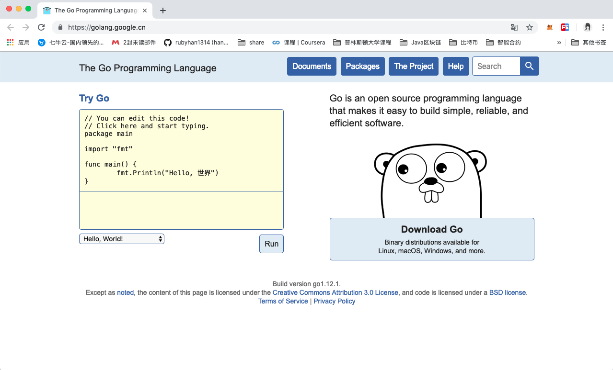

Go语言logo和版本
create by victor
一、 Go的logo
1.1 Go语言的logo
Go语言的logo就是很简洁的GO两个字母。
1.2 Go的吉祥物
Go之所以叫Go，是想表达这门语言的运行速度、开发速度、学习速度（develop）都像gopher一样快。
gopher是一种生活在加拿大的小动物，go的吉祥物就是这个小动物， 它的中文名叫做囊地鼠，他们最大的特点就是挖洞速度特别快，当然可能不止是挖洞啦。
二、Go的官网

三、 Go语言主要发展过程
- 2007年9月，雏形设计 ，Rob Pike（罗伯.派克） 正式命名为Go；
- 2008年5月，Google全力支持该项目；
2009年11月10日，首次公开发布，Go将代码全部开源，它获得了当年的年度语言；
2011年3月16日，Go语言的第一个稳定(stable)版本r56发布。
2012年3月28日，Go语言的第一个正式版本Go1发布。
2013年4月04日，Go语言的第一个Go 1.1beta1测试版发布。
2013年4月08日，Go语言的第二个Go 1.1beta2测试版发布。
2013年5月02日，Go语言Go 1.1RC1版发布。
2013年5月07日，Go语言Go 1.1RC2版发布。
2013年5月09日，Go语言Go 1.1RC3版发布。
2013年5月13日，Go语言Go 1.1正式版发布。
2013年9月20日，Go语言Go 1.2RC1版发布。
2013年12月1日，Go语言Go 1.2正式版发布。
2014年6月18日，Go语言Go 1.3版发布。
2014年12月10日，Go语言Go 1.4版发布。
2015年8月19日，Go语言Go 1.5版发布，本次更新中移除了”最后残余的C代码”。
2016年2月17日，Go语言Go 1.6版发布。
2016年8月15日，Go语言Go 1.7版发布。
2017年2月17日，Go语言Go 1.8版发布。
2017年8月24日，Go语言Go 1.9版发布。
2018年2月16日，Go语言Go 1.10版发布。
2018年8月24日，Go语言Go 1.11版发布。
2019年2月25日，GO语言Go1.12版发布。
Go 语言起源 2007 年，并于 2009 年正式对外发布。它从 2009 年 9 月 21 日开始作为谷歌公司 20% 兼职项目，即相关员工利用 20% 的空余时间来参与 Go 语言的研发工作。
其实可以看到，Go语言的历史不算很短。
2009年11月 GO语言第一个版本发布。2012年3月 第一个正式版本Go1.0发布。
2015年8月 go1.5发布，这个版本被认为是历史性的。完全移除C语言部分，使用GO编译GO，少量代码使用汇编实现。另外，他们请来了内存管理方面的权威专家Rick Hudson，对GC进行了重新设计，支持并发GC，解决了一直以来广为诟病的GC时延（STW）问题。并且在此后的版本中，又对GC做了更进一步的优化。到go1.8时，相同业务场景下的GC时延已经可以从go1.1的数秒，控制在1ms以内。GC问题的解决，可以说GO语言在服务端开发方面，几乎抹平了所有的弱点。
直到今年的2月25日，Go语言发布最新的版本是Go 1.12。
在GO语言的版本迭代过程中，语言特性基本上没有太大的变化，基本上维持在GO1.1的基准上，并且官方承诺，新版本对老版本下开发的代码完全兼容。事实上，GO开发团队在新增语言特性上显得非常谨慎，而在稳定性、编译速度、执行效率以及GC性能等方面进行了持续不断的优化。
Go稳定版发布时，Go Team承诺后续的版本都会兼容之前的版本。这对于开发者来说非常重要，Go后续的版本也一直在提升内功，从而可以让用户无缝的升级Go版本。

本文部分图片来自网络，侵删
千锋Go语言的学习群：784190273
对应视频地址：
https://www.bilibili.com/video/av47467197
https://www.bilibili.com/video/av56018934/
源代码：